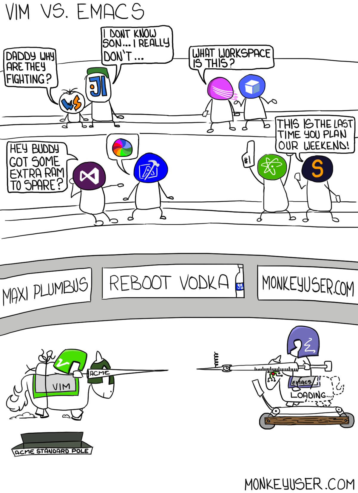

Christophe's space
This space is to spread light about the holy war that has gone one since the dawn of time.
The beginning of the holy war.
We know that the war has lasted since atleast 1985(EMACS vs. vi: The endless geek 'holy war'), and has been at each others throat ever since.

The religious faculties
On the one side you have the Church of Emacs with the saint, and creator of Emacs, Richard Stallmann. Also known as St IGNU-cius. These refer to vi(m) as the "editor of the beast", since vi-vi-vi is 666 in Roman numerals.
On the other hand we have the Cult of vi.
Comparisions
Below is a table of comparisions between the two
| Feature | Vi | Emacs |
|---|---|---|
| Keystroke execution | Vi retains each permuation of typed keys | Emacs commands are key combinations for which modifier keys are held down while other keys are pressed |
| Memory usage and customizabillity | Vi is a smaller and faster program. Vi start-up time is near instanteous. Vim and Neovim has evolved from Vi with more functionality and customization, making it comparable to Emacs. |
Emacs executes many actions on startup. This makes Emacs use a long time to start up, almost like an operating system. However the versatility and customization that comes from Lisp is almost endless |
Benefits of Emacs
There is a function for that in Emacs
- Emacs has a non-modal interface
- Non-modal nature of Emacs keybindings makes it practical to be supported as OS-wide keybindings
- Extensible and customizable Lisp variant (Emacs lisp), with features like
- Ability to emulate vi, using Evil.
- An OS inside and OS
- A powerful file manager
Benefits of vi
I have been using vi for over a decade now. Mostly because I don't know how to exit.
- Edit commands are composable
- Vi has a modal interface
- Extensible and customizable through Vim script
- Now also with Python, Lua, Ruby and Perl
Final takes

In the end, all of this is just some sibling rivalry. And with todays plugins and open source material, it is easy to customize the text editor of your choice to be some hybrid version that has the best of both worlds. But at this point, me personally like using vim for this exact reason. That reason being that to customize in Emacs, one must use the Emacs lisp language. An example of this is setting the relative numbers in Emacs
(global-display-line-numbers-mode 1)
(setq display-line-numbers-type 'relative)
While in vim, I always recommend first learning vim script. But now has the option of doing it your way. And isn't that the point, that there are many ways to nirvana. So my top choices for editors.
- Vim
- Emacs
And all the way at the end the dreaded Notepad++